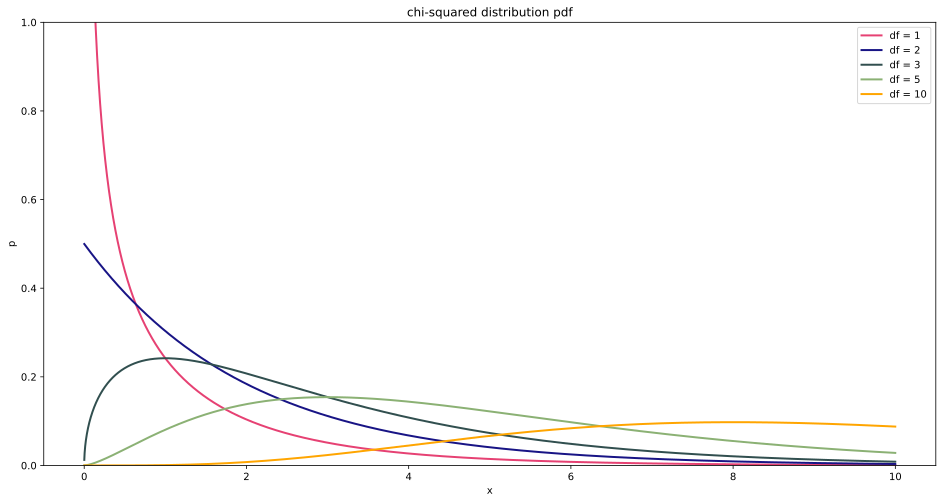
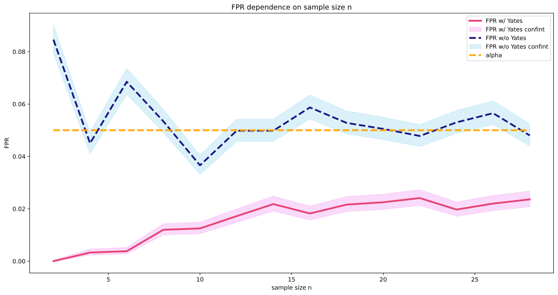
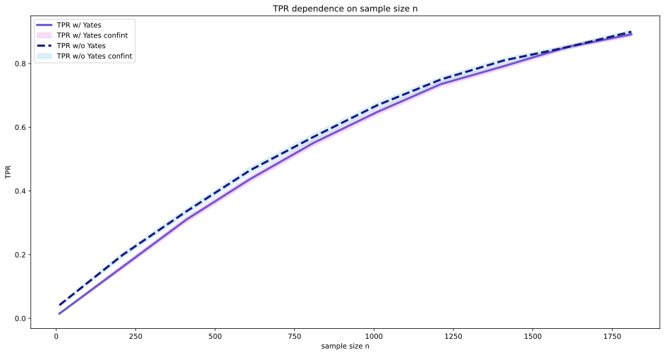

\(\chi^2\)
Applied Statistics
Kyiv School of Economics
\(\chi^2\)-test
- \(\mathcal{P}\) — the distribution of probabilities of cube.
- \(p_i\) — the probability that \(i\) faces fall out on the cube.
\[ H_0: p_1 = p_2 = p_3 = p_4 = p_5 = p_6 = \frac{1}{6} \]
\[ H_1: H_0\text{ incorrect} \]
- \(n\) — the number of experiments, \(n = 60\).
| \(a_i\) | ||||||
|---|---|---|---|---|---|---|
| \(n_i\) | 5 | 8 | 9 | 8 | 10 | 20 |
Statistics
- We have empirical frequencies \(n_i\) and theoretical probabilities \(p_i\).
- We need to compare them.
\[ \sum_i\frac{\left( \frac{n_i}{n}-p_i \right) ^2}{p_i} \]
Statistics distribution
Consider the simplest case: when we have only two elementary outcomes \(a_1\) and \(a_2\) with probabilities \(p_1 = p\) and \(p_2 = 1 - p\) respectively:
\[\sum_{i=1}^{2}\frac{\left(\frac{n_i}{n}-p_i\right)^2}{p_i} = \]
\[= \frac{\left(\frac{n_1}{n}-p\right)^2}{p} + \frac{\left(\frac{n - n_1}{n} - (1 - p)\right)^2}{1 - p} = \]
\[= \frac{\left(\frac{n_1}{n}-p\right)^2 (1-p)+ \left(\frac{n_1}{n} - p\right)^2 p}{p (1 - p)} = \]
\[= \frac{(n_1-n p)^2}{p (1 - p) n^2} \stackrel{[1]}{\sim} \]
\[ \sim \frac{\left(Binom(n, p)-n p\right)^2}{p (1 - p) n^2} \stackrel{[2]}{\sim}\]
\[ \sim \frac{\left(\mathcal{N}\left(np, np(1-p)\right) - n p\right)^2}{p (1 - p) n^2} \stackrel{[3]}{=} \]
\[ = \frac{\mathcal{N}(0, 1)^2}{n}\]
1. We see that the only random variable in the expression is \(n_1\). If the null hypothesis is true, it is distributed according to the binomial law as \(Binom(n, p)\).
Recall the CLT: for large \(n\), a random variable distributed as \(Binom(n, p)\) is equivalent to a normal distribution \(\mathcal{N}\left(np, \sqrt{np(1-p)}\right)\).
Using the property of normal distribution \(N(a, b) = a + \sqrt b \mathcal{N}(0,1)\), we realize that our statistic is distributed as \(\frac{\mathcal{N}(0, 1)^2}{n}\).
\[\tau = n\sum_{i=1}^{2}\frac{(\frac{n_i}{n}-p)^2}{p} \sim \mathcal{N}(0, 1)^2\]
Recall that the standard normal distribution’s square is equivalent to a \(\chi^2\) distribution with one degree of freedom: \(\chi^2_{1}\).
\[\tau = n\sum_{i=1}^k\frac{(\frac{n_i}{n}-p_i)^2}{p_i} \sim \chi^2_{k-1}\]
\(\chi^2\) Distribution
Algorithm
- Fix a significance level of \(\alpha\).
- Fix the discrete distribution \(\mathcal{P}\), for which we want to test our sample.
- Record the sample with \(k\) outcomes in a frequency table.
- If the number <5 (or <10 in the case of frequency table 2x1) is in a cell of the table, then combine the outcomes until this condition is met.
- Calculate the statistics \[\tau = n\sum_{i=1}^k\frac{\left(\frac{n_i}{n}-p_i\right)^2}{p_i},\] where \(n\) is the sample size, \(k\) is the number of different outcomes, \(n_i\) is the number of occurrences of outcome \(i\), \(p_i\) is the probability of outcome \(i\) according to the distribution \(\mathcal{P}\).
- Consider \(\it{\text{p-value}}\) as \(P(X \geq \tau)\), where \(X \sim \chi^2_{k-1}\).
- If \(\it{\text{p-value}} \leq \alpha\), then we reject the hypothesis.
Experiment and \(\chi^2\)-test
n = 60
| \(a_i\) | ||||||
|---|---|---|---|---|---|---|
| \(n_i\) | 5 | 8 | 9 | 8 | 10 | 20 |
\[H_0: p_1 = p_2 = p_3 = p_4 = p_5 = p_6 = \frac{1}{6}\]
\[\tau = 60\sum_{i=1}^6\frac{\left(\frac{n_i}{60}-\frac{1}{6}\right)^2}{\frac{1}{6}} = 13.4\]
\(p\)-value = \(P(X \geq 13.4)\) = 0.019905220334774376
\(\chi^2\)-test for Independence
Task
We have decided to conduct a study to understand our user profile better.
As part of this research, we will study user activity regarding how long a user has used our products.
The goal is to determine whether an active user’s frequent visits to the site are independent of how long the user has been registered.
Metrics
We will consider the number of visits to the site by the user as a discrete random variable \(\eta\), which takes the following values:
- \(<10\) visits (with probability \(q_1\));
- \(10-20\) visits (with probability \(q_2\));
- \(20-30\) visits (with probability \(q_3\));
- \(30+\) visits (with probability \(q_4\)).
Let’s consider the user registration period as a discrete random variable \(\psi\), taking values:
- \(<1\) years (with probability \(p_1\));
- \(1-2\) years (with probability \(p_2\));
- \(2-3\) years (with probability \(p_3\));
- \(3-4\) years (with probability \(p_4\));
- \(4-5\) years (with probability \(p_5\));
- \(5+\) years (with probability \(p_6\)).
\[H_0: \text{ random variables } \eta \text{ and } \psi \text{ are independent}\]
Contingency table
| \[<1 \text{ years}\] | \[1 - 2 \text{ years}\] | \[2-3 \text{ years}\] | \[3-4 \text{ years}\] | \[4-5 \text{ years}\] | \[5+ \text{ years}\] | |
|---|---|---|---|---|---|---|
| \(\leq 9 \text{ visits}\) | \(n_{11}\) | \(n_{12}\) | \(n_{13}\) | \(n_{14}\) | \(n_{15}\) | \(n_{16}\) |
| \(10-19 \text{ visits}\) | \(n_{21}\) | \(n_{22}\) | \(n_{23}\) | \(n_{24}\) | \(n_{25}\) | \(n_{26}\) |
| \(20-29 \text{ visits}\) | \(n_{31}\) | \(n_{32}\) | \(n_{33}\) | \(n_{34}\) | \(n_{35}\) | \(n_{36}\) |
| \(30+ \text{ visits}\) | \(n_{41}\) | \(n_{42}\) | \(n_{43}\) | \(n_{44}\) | \(n_{45}\) | \(n_{46}\) |
| \[<1 \text{ years}\] | \[1 - 2 \text{ years}\] | \[2-3 \text{ years}\] | \[3-4 \text{ years}\] | \[4-5 \text{ years}\] | \[5+ \text{ years}\] | |
|---|---|---|---|---|---|---|
| \(\leq 9 \text{ visits}\) | 932299 | 680684 | 794884 | 585978 | 470660 | 397554 |
| \(10-19 \text{ visits}\) | 490658 | 519094 | 648085 | 416680 | 347016 | 315555 |
| \(20-29 \text{ visits}\) | 223166 | 347325 | 306182 | 219092 | 254512 | 237701 |
| \(30+ \text{ visits}\) | 204310 | 426824 | 277656 | 127961 | 237965 | 220446 |
\[H_0: P\left(\it{\text{get into cell } (i,j)}\right) = q_i p_j\text{, for any }i,j\]
How do we estimate the parameters?
\[p_1 = \frac{n_{11} + n_{21} + n_{31} + n_{41}}{n}\]
\[\cdots\]
\[p_6 = \frac{n_{16} + n_{26} + n_{36} + n_{46}}{n}\]
\[q_1 = \frac{n_{11} + n_{12} + n_{13} + n_{14} + n_{15} + n_{16}}{n}\]
\[\cdots\]
\[q_4 = \frac{n_{41} + n_{42} + n_{43} + n_{44} + n_{45} + n_{46}}{n},\]
where \(n = \sum n_{ij}\).
\[\tau = n\sum_{i=1, j=1}^{i=m, j=k}\frac{\left(\frac{n_{ji}}{n}-q_i p_j\right)^2}{q_i p_j} \sim \chi^2_{mk-(m-1)-(k-1)-1} = \chi^2_{(m-1)(k-1)},\]
where \(m\) is the number of samples, \(k\) is the number of outcomes in them, and \(q_i\) and \(p_i\) are estimated as described above.
Algorithm
- Fix a significance level of \(\alpha\).
- Record \(m\) samples with \(k\) outcomes in a contingency table.
- If a cell in the table contains a number <5 (or <10 for contingency table 2x2), then we combine the outcomes until this condition is met.
- Calculate the statistic \[\tau = n\sum_{i=1, j=1}^{i=m, j=k}\frac{\left(\frac{n_{ji}}{n}-q_i p_j\right)^2}{q_i p_j} = \sum \frac{(O - E)^2}{E},\] where \(m\) is the number of samples, \(k\) is the number of outcomes in them, and \(q_i\) and \(p_i\) are estimated as described above.
- We compute p-value as \(P(X \geq \tau)\), where \(X \sim \chi^2_{(m-1)(k-1)}\).
- If p-value \(\leq \alpha\), we reject the hypothesis.
Experiment and \(\chi^2\)-test
| \[<1 \text{ years}\] | \[1 - 2 \text{ years}\] | \[2-3 \text{ years}\] | \[3-4 \text{ years}\] | \[4-5 \text{ years}\] | \[5+ \text{ years}\] | |
|---|---|---|---|---|---|---|
| \(\leq 9 \text{ visits}\) | 932299 | 680684 | 794884 | 585978 | 470660 | 397554 |
| \(10-19 \text{ visits}\) | 490658 | 519094 | 648085 | 416680 | 347016 | 315555 |
| \(20-29 \text{ visits}\) | 223166 | 347325 | 306182 | 219092 | 254512 | 237701 |
| \(30+ \text{ visits}\) | 204310 | 426824 | 277656 | 127961 | 237965 | 220446 |
\(\chi^2\) = 270783.1602672747
\(p\)-value = 0.0
df = 15
We see that the hypothesis is rejected at the significance level of \(5\%\): we cannot consider the frequency of site visits by an active user to be independent of the year of registration.
\(\chi^2\)-test for Homogeneity
Task
We want to test the effect of the drug on the incidence of syncope in patients.
The first sample is the frequency of syncope in the control group (a set of patients who received placebo).
The second sample is the rate of syncope in the test group (the set of patients who were given the drug).
We need to test whether the drug administered affects the frequency of syncope?
Frequencies table
| \[0 \] | \[1 \] | \[2 \] | \[{3+}\] | |
|---|---|---|---|---|
| Test group | 3243 | 432 | 108 | 66 |
| Control group | 3045 | 421 | 128 | 83 |
But now, let’s look at this table from another perspective: consider the patient group as a random variable. Then we have two random variables:
- \(\psi:\) the frequency of syncopal states (\(0\), \(1\), \(2\), \(3+\));
- \(\eta:\) which group the patient is in (test, control).
That is, our frequency table is identical to the contingency table! And testing the homogeneity hypothesis is equivalent to testing the independence hypothesis!
\(\chi^2\) = 6.08336889360378
\(p\)-value = 0.10762384975870487
The hypothesis of homogeneity is not rejected at a significance level of \(5\%\): we cannot claim that the distribution of syncopal frequency is different in the test and control groups.
Yates’ Correction
Yates’ Correction
- the number of observations in each cell is higher than 5;
- for the case of frequency table 2x1 the number of observations in each cell is higher than 10;
- for the contingency table 2x2 case, the number of observations in each cell is higher than 10.
\[\tau = n\sum_{i=1, j=1}^{i=2, j=2}\frac{(\frac{n_{ji}}{n}-q_i p_j - 0.5)^2}{q_i p_j},\]
This correction is used to reduce the probability of a Type I error in the case of a small number of observations in the cells of the table.
Example
| A | B | Total | |
|---|---|---|---|
| 1 | 15 | 18 | 33 |
| 2 | 15 | 13 | 28 |
| Total | 30 | 31 | 61 |
No correction:
\(\chi^2\) = 0.3992982823627989
\(p\)-value = 0.5274518757044919
Yates’ correction:
\(\chi^2\) = 0.1405707419820326
\(p\)-value = 0.7077142755628698
FPR and Yates’ Correction
Yates correction reduces the FPR.
Power and Yates’ Correction

Applied Statistics